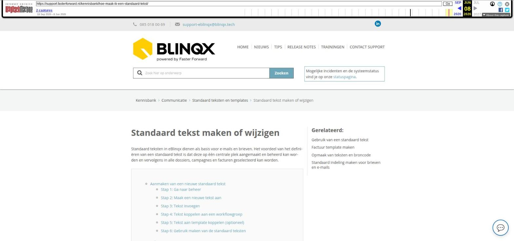

Standaard tekst maken of wijzigen

Tekstinhoud
Standaard tekst maken of wijzigen
Standaard teksten in eBlinqx dienen als basis voor e-mails en brieven. Het voordeel van het definiëren van een standaard tekst is dat deze op één centrale plek aangemaakt en beheerd kan worden en vervolgens in alle dossiers, campagnes en facturen geselecteerd kan worden.
Aanmaken van een nieuwe standaard tekst
Stap 1: Ga naar beheer
Stap 2: Maak een nieuwe tekst aan
Stap 3: Tekst invoegen
Stap 4: Tekst koppelen aan een workflowgroep
Stap 5: Tekst aan template koppelen (optioneel)
Stap 6: Gebruik maken van de standaard teksten
Bijlagen
Standaard tekst wijzigen
Aanmaken van een nieuwe standaard tekst
Stap 1: Ga naar beheer
Via het dashboard kan je gemakkelijk naar correspondentie teksten beheer. Hier kan je standaard teksten aanmaken en wijzigen.
Stap 2: Maak een nieuwe tekst aan
Klik linksboven op het plusicoon om een nieuw standaard tekst aan te maken.
Maak jouw standaard tekst aan.
Vul de 'Naam' en 'Onderwerp' in van de standaard tekst. Deze naam zal je zien in de dropdown bij het invoegen van een standaard tekst. Het onderwerp wordt gevuld bij het onderwerp (bijvoorbeeld onderwerp van de e-mail) na selectie.
Selecteer de "Organisatie" die de standaard tekst mag gebruiken. Wanneer je geen organisatie (deelnemer / tussenpersoon) selecteert, mogen alle organisaties (kantoren) binnen jouw eBlinqxomgeving de standaard tekst selecteren.
Geef daarna aan voor welke media de standaard tekst ter beschikking wordt gesteld. Voorbeeld: wanneer er alleen "Correspondentie" wordt geselecteerd, kan de standaard tekst alleen worden ingevoegd bij het aanmaken van een brief.
Selecteer vervolgens de productsoort(en) waarbij de standaard tekst van toepassing is. Wanneer hier niets wordt geselecteerd, is de standaard tekst te allen tijde in te voegen, ongeacht welk product aan de brief (of e-mail, registratie, sms) wordt gekoppeld in het klantdossier. Voorbeeld: wanneer hier alleen 'hypotheek' gekozen wordt, dient men de brief of e-mail vanuit de hypotheek aan te maken om gebruik te maken van de standaard tekst.
Stap 3: Tekst invoegen
Hierna kan je de inhoud van jouw tekst typen of invoegen in het tekstveld.
In de tekst kan je gebruik maken van tags. Op die manier wordt correspondentie gestandaardiseerd (eenmalig instellen) en toch gepersonaliseerd. Dit scheelt aanzienlijk in de dagelijkse werkzaamheden van gebruikers. Ook is het mogelijk om een afbeelding in de tekst toe te voegen. De afbeelding van het logo moet door middel van een URL toegevoegd worden. Om van een afbeelding een URL te maken, moet de afbeelding gehost worden. Dit kan jijzelf regelen of wij kunnen de afbeelding voor jouw hosten en omzetten naar een URL. Stuur hiervoor een e-mail naar support-eblinqx@blinqx.tech. De afbeelding voeg je toe aan de tekst door middel van het afbeeldingsicoon. Hier vul je in het veld URL de aangemaakte URL in.
Stap 4: Tekst koppelen aan een workflowgroep
Wanneer je de tekst opslaat, wordt het tabblad "Groepen" zichtbaar. Dit is de laatste stap van het instellen. Koppel hier de standaard tekst aan bepaalde (workflow)groepen binnen eBlinqx. Zo kan iedere gebruiker alleen die standaard teksten selecteren welke voor hem/haar bedoeld is. Dit door de groep(en) te selecteren welke je wilt koppelen aan de tekst en te klikken op de knop 'Toevoegen' en vervolgens op te slaan.
Let op: Als je geen workflowgroep koppelt, zal de tekst voor niemand beschikbaar zijn!
Stap 5: Tekst aan template koppelen (optioneel)
Daarnaast is het mogelijk om een standaard tekst alleen beschikbaar te maken voor bepaalde templates. Zo kan je tot op detailniveau afregelen welke standaard teksten worden getoond als er een bepaalde template wordt geselecteerd in een dossier. Ga hiervoor naar het tabblad 'Template' en voeg de gewenste templates toe.
Let op: Als je geen template selecteert, zal de tekst voor alle templates beschikbaar zijn!
Stap 6: Gebruik maken van de standaard teksten
Lees hier hoe je gebruik maakt van de standaard teksten.
Bijlagen
Het is helaas niet mogelijk om bijlagen bij de standaardtekst toe te voegen. Er zijn twee opties om het document toch mee de sturen in de e-mail waarvoor je de standaardtekst gebruikt, namelijk:
1. Het document zet je om naar een link. In de standaardtekst kan je achter de tekst een link toevoegen door middel van dit icoon. De ontvanger kan dan op de link klikken om zo het bestand te bekijken.
2. De e-mail met daarin de standaartekst zet je klaar door middel van de workflow. In de workflow is het wel mogelijk om bijlagen bij een e-mail toe te voegen. Wil je de e-mail toe laten voegen aan een workflow, stuur dan een e-mail naar support-eblinqx@blinqx.tech. Zet hierin in welk workflow de actie moeten worden toegevoegd en welke standaardtekst gebruikt moet worden.
Standaard tekst wijzigen
Voor het wijzigen van een standaard tekst ga je ook naar Beheer – Correspondentieteksten beheer. Hier zoek je de standaard tekst op die je wilt wijzigen. Hiervoor kan je het zoekfilter gebruiken.
Door op het wijzigingsicoon achter de tekst te klikken, open je de standaard tekst. Je kunt vervolgens het type, artikeltype en tekst aanpassen. De aanpassing sla je op door middel van het opslaanicoon. Op het tabblad Groepen kan je de gekoppelde workflowgroepen aanpassen. Op het tabblad Templates pas je de gekoppelde templates aan.
Laatste update: 15 oktober 2025
Was deze informatie nuttig?
Ja Nee